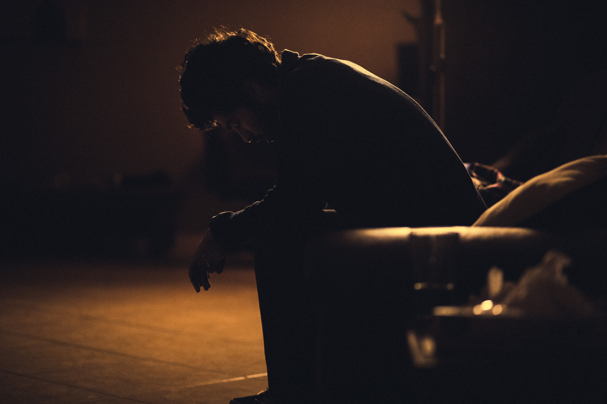

주우울증(영어: major depression)는 지속적인 우울감과 활동력 저하를 특징으로 하는 우울증 상태가 지속적 또는 반복적으로 나타나는 정신장애이다. 증상으로는 우울감과 절망감, 흥미나 쾌락의 현저한 저하, 저하되거나 증가된 식욕과 체중, 수면양의 감소나 증가, 신체적 초조 또는 활동 속도의 지체, 성욕의 상실이나 피로감, 부적절한 죄책감과 책임감, 무가치감, 집중력의 저하 또는 우유부단함, 죽음이나 자살에 대한 생각 등이 있으며, 이들이 사회생활은 물론 일상생활에 문제를 일으키는 심각한 수준으로 2주 이상 지속되는 경우 주요 우울장애로 진단될 수 있다. 사회적·직업적 생활에 여러 장애를 일으키며, 대부분 재발하므로 장기적인 치료가 필요하다.
가장 일반적인 정신장애 중 하나로, 조사에 따라 다르나 세계인구의 2~3%가 주요우울장애를 앓는 것으로 추정되며, 2~8%의 주요 우울장애 환자가 자살로 생을 마감한다.